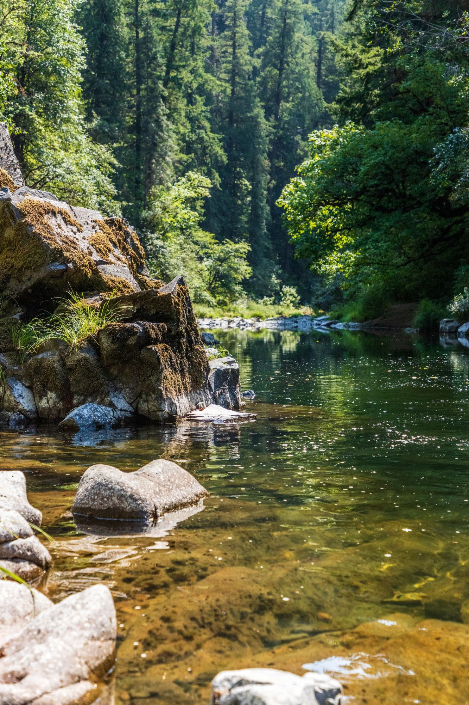
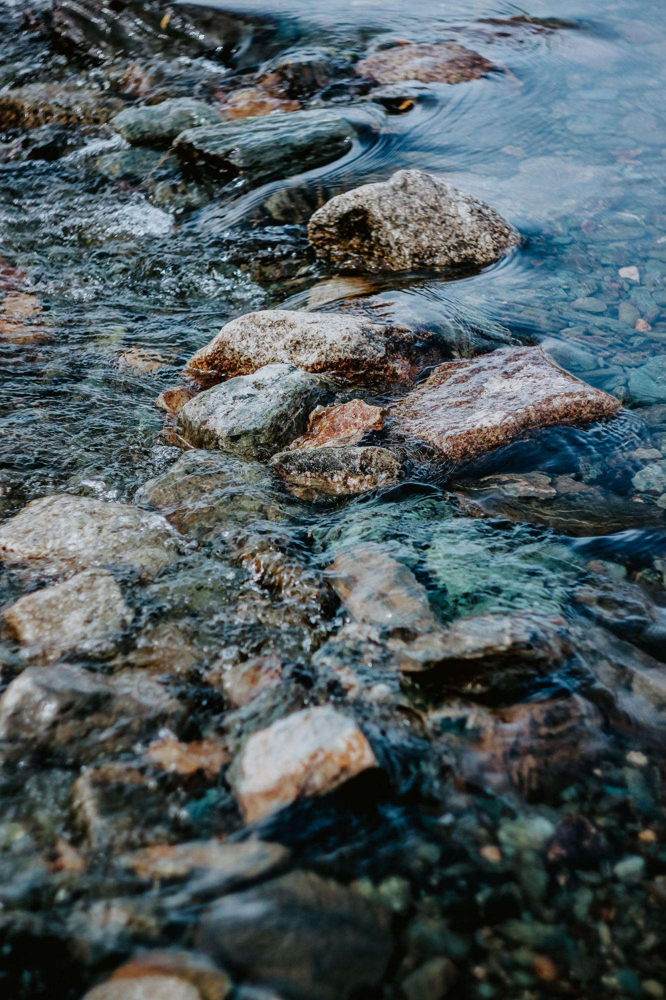
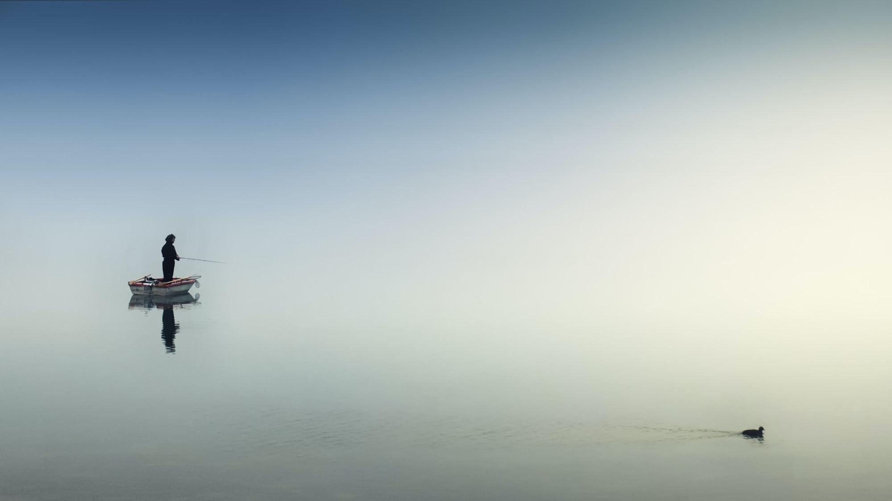

Gastronomie
Gastronomie
Shogun Sushi, Chartres
Le premier restaurant japonais de Chartres : sushis, makis et salle traditionnelle où l’on mange assis sur des coussins.
Lire l’article
Nature · Vendée
Côte de Lumière
Je vous emmène avec moi dans l’ouest de la France, sur la côte vendéenne, où se situe la ville balnéaire des Sables d’Olonne. Avec ses 8 607 hectares, ce territoire offre différents paysages à contempler, de quoi combler les amoureux de la nature. Grâce à l’influence maritime et à son microclimat, les hivers sont doux, avec peu de gelées, et les étés moins brûlants que dans les terres.
Première étape
Commençons notre tour par la forêt domaniale d’Olonne. Elle s’étend au bord du littoral atlantique sur 11 km de long, pour une largeur de 200 à 2 500 m et une superficie de 1 120 hectares. Y vivent de nombreuses espèces : chevreuils, sangliers, écureuils, lézards, vipères et un très grand nombre d’oiseaux.
Certaines zones sont constituées de dunes boisées qui protègent les terres, les villages et les marais salants lors des tempêtes de sable. Un véritable petit coin de paradis entre plage et verdure.

Deuxième étape
En continuant la balade vers l’ouest, on rejoint progressivement la plage et le bord de mer, avec cette odeur iodée caractéristique. Pas moins de cinq grandes plages bordent le littoral de la Côte de Lumière pour goûter à la plénitude d’instants ensoleillés : sable fin ou côtes sauvages, à vous de choisir.
Attention tout de même aux grandes marées et aux vents violents : quand l’océan se déchaîne, le spectacle est superbe, mais gare aux risques pour les aventuriers qui veulent l’immortaliser.


Une épreuve de force, tant physique que morale.
Impossible de faire le tour de la ville sans parler du mythique Vendée Globe, dont le port des Sables d’Olonne est le point de départ et d’arrivée. Célèbre course autour du monde à la voile en solitaire, sans escale et sans assistance, elle a lieu tous les quatre ans depuis 1989 : une trentaine de skippeurs bataillent jour et nuit pendant environ trois mois pour franchir la ligne d’arrivée.
Continuer la lecture
Gastronomie
Le premier restaurant japonais de Chartres : sushis, makis et salle traditionnelle où l’on mange assis sur des coussins.
Lire l’article Sport
Sport
Sensibilisation, journées dépollution et pêche « no kill » : la pêche, sport national de l’Aube.
Lire l’article Art
Art
Un voyage dans la région bordelaise à travers ses secrets, son histoire, son art et son architecture.
Lire l’article